בדידות מול בירוקרטיה
משפחות רבות מוצאות את עצמן בלי קהילה שמבינה, ונאלצות להתמודד לבד מול מערכת קלינית נוקשה.
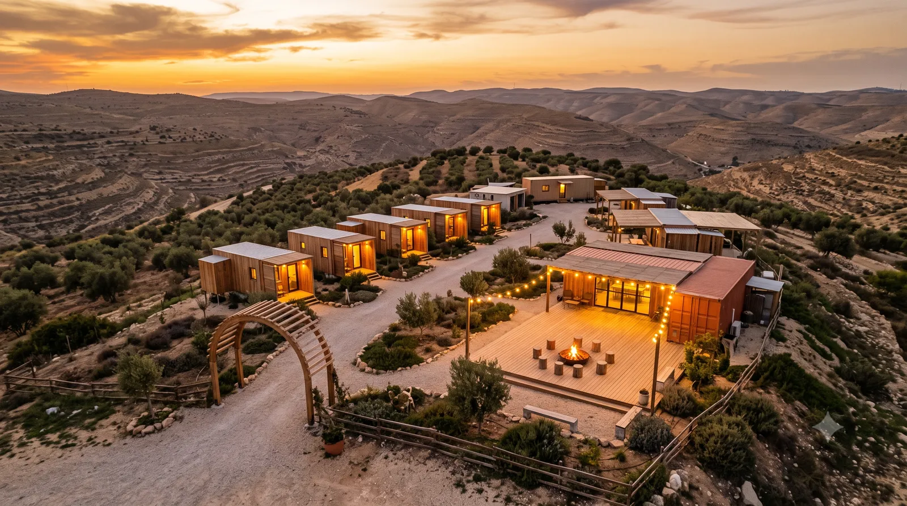
מרכז חוסן ועשייה · לזכר יוחנן אליהו פרדג׳ ז״ל
בית קהילתי למתמודדים עם פוסט טראומה ולבני זוגם.
ממשיכים את החלום של יוחנן.
סיפורו
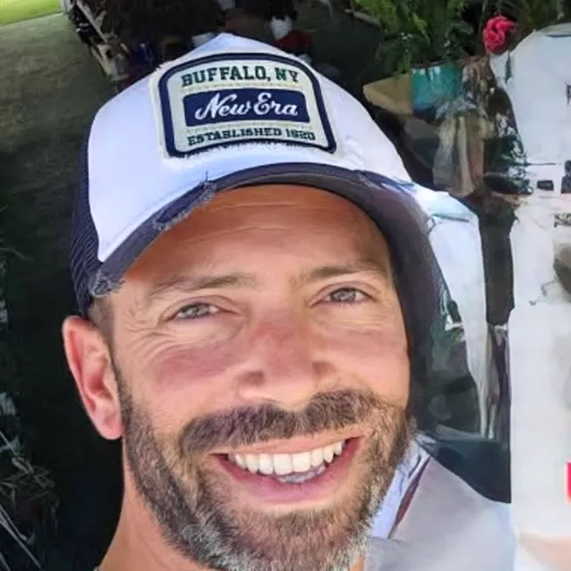
יוחנן אליהו פרדג׳ ז״ל היה איש של שקט ושל חיים. אדם שידע לאהוב, לחבק, ולהישאר עם האנשים שסביבו גם ברגעים הקשים ביותר. הוא שירת כלוחם בסיירת אגוז, והביא עמו מתוך השירות ניסיון אישי עמוק עם פוסט טראומה.
חלומו היה להקים מקום שבו אנשים לא יצטרכו להתמודד לבד. מקום שבו בני זוג יזכו לתמיכה לצד מי שהם אוהבים. מקום של טבע, של עשייה, של קהילה.
"המקום" הוא אותו חלום, והוא ממשיך לחיות.
"הוא לא רצה שמישהו יישאר לבד עם זה. זה כל מה שהוא רצה."
מדברי מי שהכירו אותו
הצורך
בין שדה הקרב לבית מחכה פער שקט. משפחות של משרתים ואנשי מילואים נושאות נטל שלא תמיד רואים, וברוב המקרים, לבד.
משפחות רבות מוצאות את עצמן בלי קהילה שמבינה, ונאלצות להתמודד לבד מול מערכת קלינית נוקשה.
המעבר החד בין הלחימה לבית ולהורות יוצר מתחים בתוך התא המשפחתי, בלי כלים ובלי מרחב לעבד אותם.
היעדרויות ממושכות מטילות עומס פיזי ורגשי כבד על בני הזוג ועל הילדים שנשארים בבית.
החזון
"המקום" נולד מתוך צורך אמיתי. בית שמחזיק יחד חוסן, טבע ועשייה, ושמזמין גם את בני הזוג, כי ריפוי הוא תמיד מעשה משותף.
תוכניות ליווי מותאמות אישית, סדנאות חוסן, וקבוצות תמיכה, לאנשים שחוו טראומה ולמשפחותיהם. בלי שיפוטיות, בלי לבד.
פעילויות בטבע, גינון טיפולי, יצירה, ומרחבי שקט. כי לפעמים הריפוי מגיע כשהידיים עסוקות והראש מנוח.
מרחב שמזמין גם את בני הזוג, כי הם לא אספקה צדדית, הם חלק מהסיפור. קהילה שמחזיקה הכול.
"לחיות זה לא רק לנשום. לחיות זה לרצות לנשום."
לא עוד מסגרת בודדת, אלא מעטפת שלמה שעוטפת את המשפחה מבחוץ פנימה, מהקהילה ועד הליווי האישי.
מענה פרטני, זוגי ומשפחתי לחיזוק הקשר ולהתמודדות יומיומית.
קשת טיפולית רחבה, מטיפול שיחתי קליני ועד טיפול בטבע ובמלאכה.
בית מזמין ובלתי פורמלי (Hub) — מקום של ביטחון, שקט ושייכות.
רשת של משפחות שחולקות את אותם אתגרים, וכוח מניע הדדי.
הדרך מתחילה רכה וטבעית, וממשיכה עד שהמשפחה עצמה הופכת לעוגן עבור משפחות אחרות.
הגעה בלי טפסים ובלי בירוקרטיה. קודם כל קפה, שיחה ושייכות.
הקשבה והתאמה של מסלול אישי, מבלי תוויות.
ליווי פרטני וקבוצתי לצד סדנאות נגרות וחקלאות והדרכת הורים.
המשפחה הופכת לנקודת תמיכה עבור מי שרק מתחיל את הדרך.
המרחב
המרחב עצמו הוא חלק מהטיפול. הוא בנוי כמסע: מפינות שקט בטבע, דרך עבודת כפיים, ועד לב חברתי פתוח.
התבוננות
פינות ישיבה מבודדות בנוף, מרחבי שיחה פרטניים, והרחקה משאון היומיום.
קרקוע
סדנאות נגרות, עבודה בברזל וחקלאות אקולוגית. עבודת כפיים כדרך לעיבוד רגשי ולתחושת מסוגלות.
חיבור
אולם פתוח, מטבח חברתי ומפגשי שיח. הלב שמתחיל בכוס קפה ומחבר בין כולם.
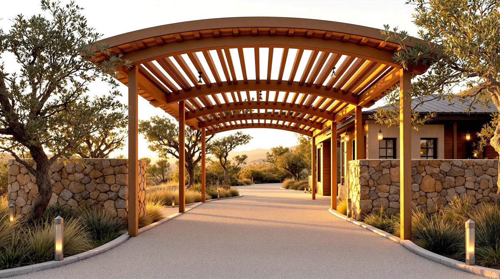
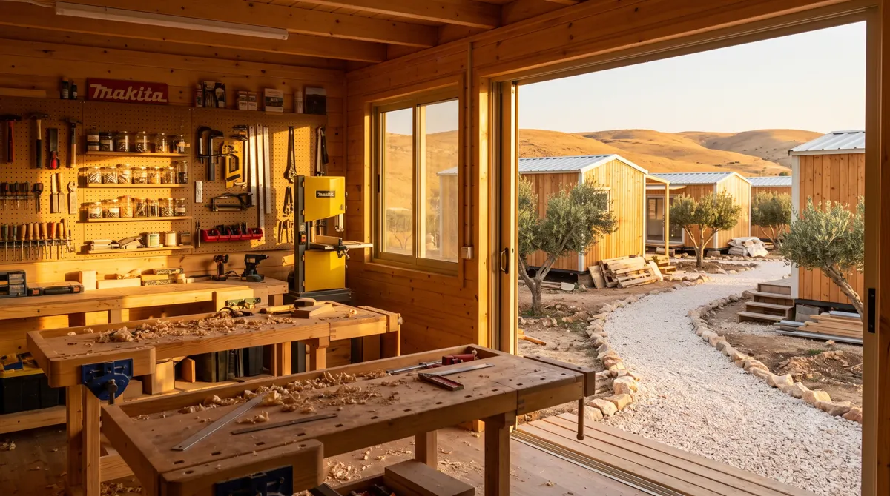
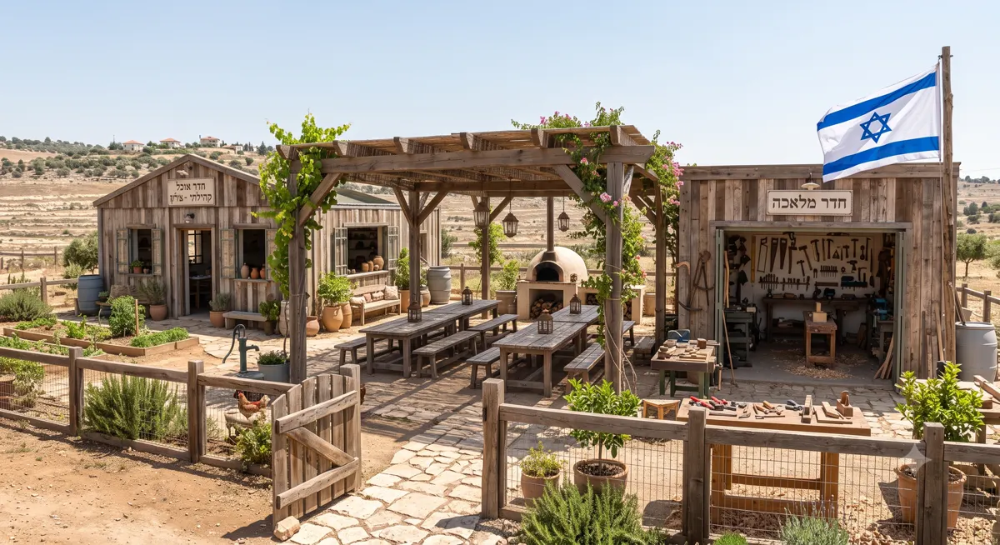
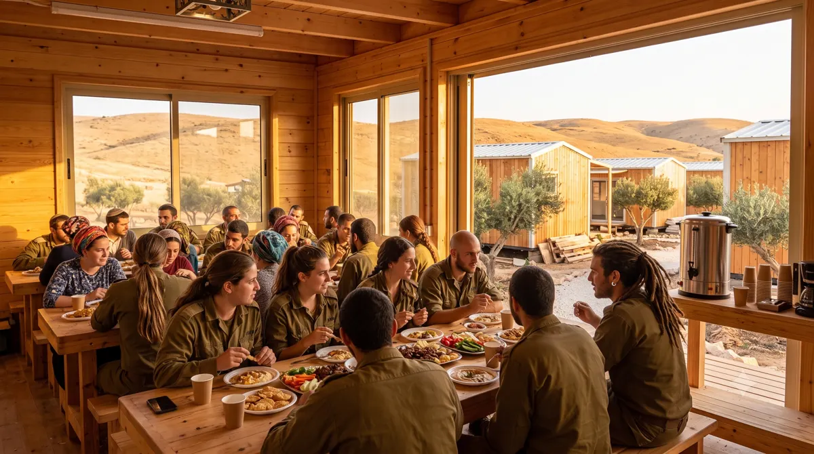
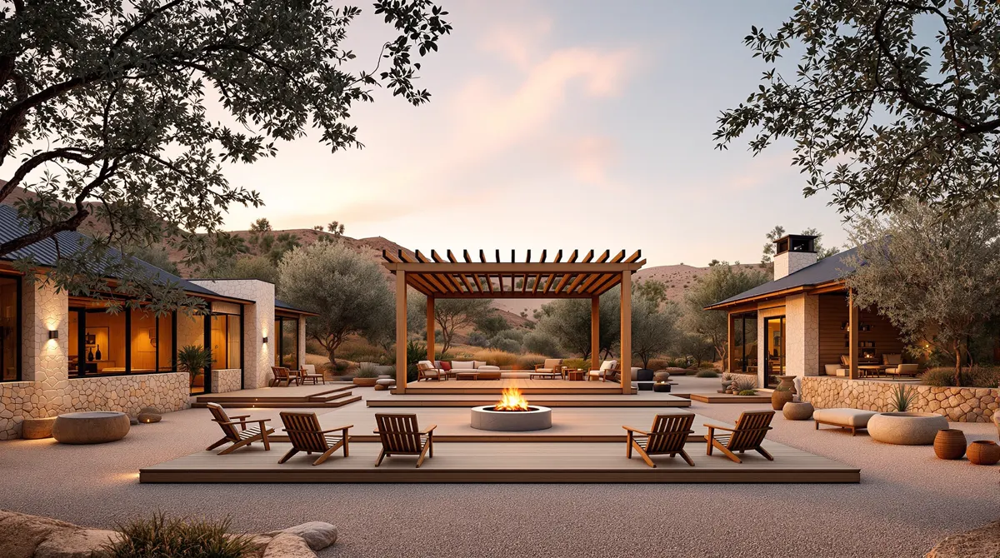
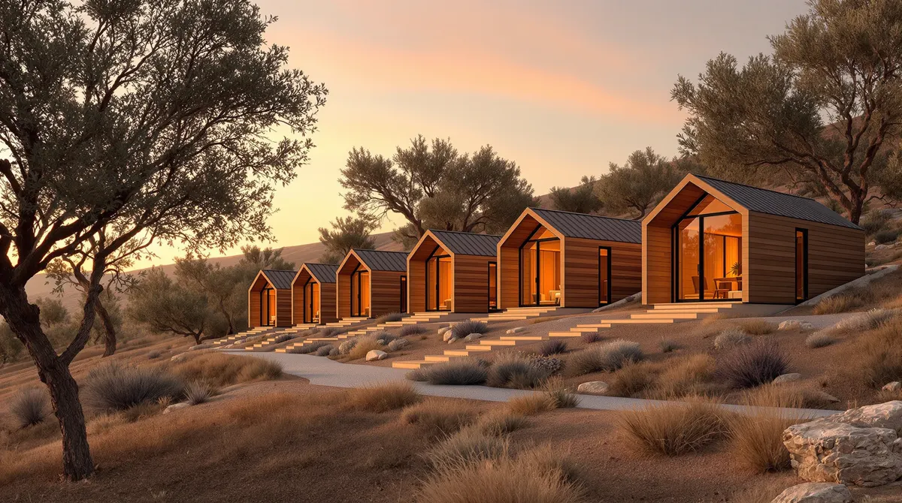
המרכז מתוכנן לקום בפארק אלון, קריית ארבע. חיבור הרמוני בין נגישות עירונית לטבע פתוח.
מי היה יוחנן
יוחנן אליהו פרדג׳ ז״ל, בן 38, היה תושב קריית ארבע. נשוי לנעמה, אבא לאורי, גלעד ונדב. בכור לשבעה אחים, חמישה מהם לוחמים בצה״ל.
יוחנן אהב לעזור, ויותר מכל אהב אנשים. את לוחמיו, את חבריו, את הפוסט טראומטיים שטרם הוכרו, את אלה שלא ביקשו. הוא נשא אותם על כתפיו עד שכוחותיו שלו כשלו.
יוחנן לא רק לחם, הוא דאג. דאג ללוחמים אחרים, למפקדים, לפוסט טראומטיים שטרם הוכרו. נסע ממקום למקום לגייס כסף לטיפול בחברים שנשברו, ושמר ציוד חירום בביתו, מוכן תמיד לקריאה.
"נתן הכול לכולם · קודם כל אחרים, ורק אחר כך אני."
מדברי המשפחה
חברים מספרים שלא היו מאמינים שדווקא הוא, שתמיד היה החזק, תמיד נתן, תמיד עזר, הוא זה שייפול. כי הוא לא סיפר. כי הוא לא ביקש.
"יוחנן היה חלק ממשפחת אגוז · לוחם, חבר ואדם אהוב שהשאיר חותם על כל מי שפגש בו."
הודעת עמותת בוגרי אגוז
המשפחה שלו
את אלה הוא אהב יותר מכל. נעמה ושלושת הבנים היו הבית, העוגן, הסיבה לכל מה שנתן.
אבל המשפחה שלו לא נגמרה כאן. היא כללה גם את לוחמיו, את חבריו, ואת האנשים שטיפל בהם.
שירות
יוחנן שירת את מרבית חייו הבוגרים במערך הלחימה של צה״ל. החל בסיירת אגוז, ולא הפסיק. כשפרצה מלחמת חרבות ברזל, פנה לחבר קצין בחטיבת כרמלי ונאבק להתגייס מחדש כסגן מפקד פלוגה. לחם בכל מלחמה שארצו ניהלה מאז שהתגייס. לא ביקש שום דבר בתמורה.
ציר זמן
אביו משה נפצע אנוש בקרב סמטת הגבורה, הפיגוע בציר המתפללים בחברון. בקרב נהרגו 12 ישראלים, בהם אל"מ דרור וינברג.
מתגייס לסיירת אגוז. תחילת מסלול לחימה שיימשך כל חייו הבוגרים.
משתתף במבצע עופרת יצוקה בעזה.
מבצע צוק איתן. חווה אירוע טראומטי בצוות. משוחרר מהמילואים.
נפצע בפיגוע אבנים. עובד תקופה במשרד הביטחון. מחליט לשמש כרבש"ץ בקריית ארבע, תפקיד שמילא תחת לחץ עצום: פיגועים, חדירות, אירועי אבטחה. במקביל מתנדב בצוות לוט"ר ישובי.
מתעקש לחזור ללחימה. מתגייס מחדש לחטיבת כרמלי כסגן מפקד פלוגה.
חודשים ארוכים של לחימה רצופה: עזה, הצפון, לבנון. במקביל, עוזר ללוחמים נפגעי נפש, מגייס כסף לטיפולים.
יוחנן אליהו פרדג' הלך לעולמו. בן 38. השאיר אחריו אישה, שלושה ילדים, ומשפחה שלמה של לוחמים וחברים.
רגעים קטנים שנשארים. חיוך, מבט, יד על כתף. כאן נאסוף תמונות מחייו של יוחנן, כדי שהזיכרון יישאר חי וקרוב.
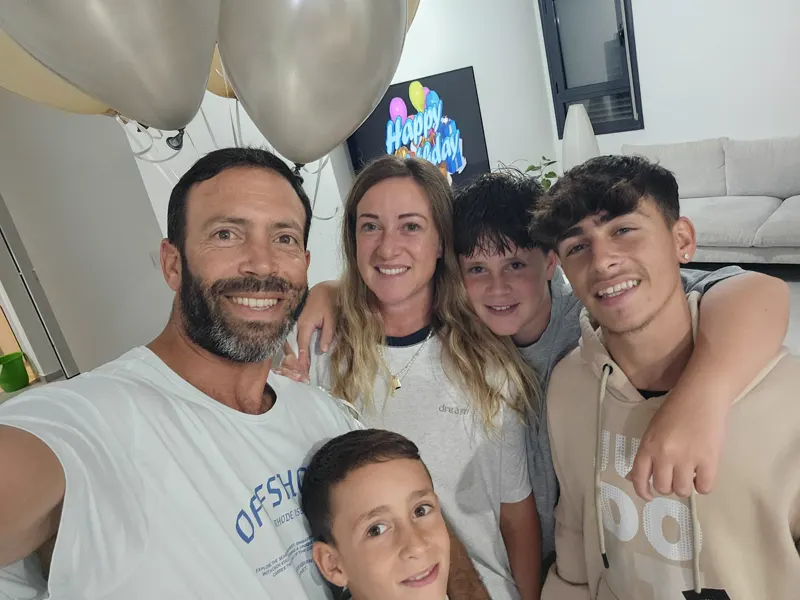
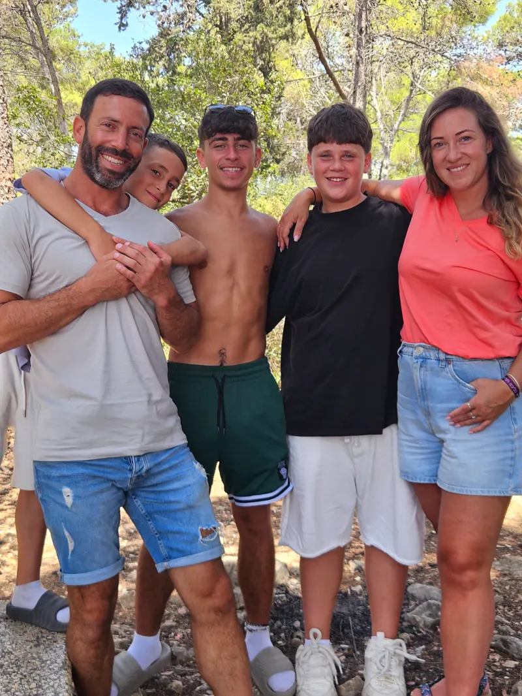
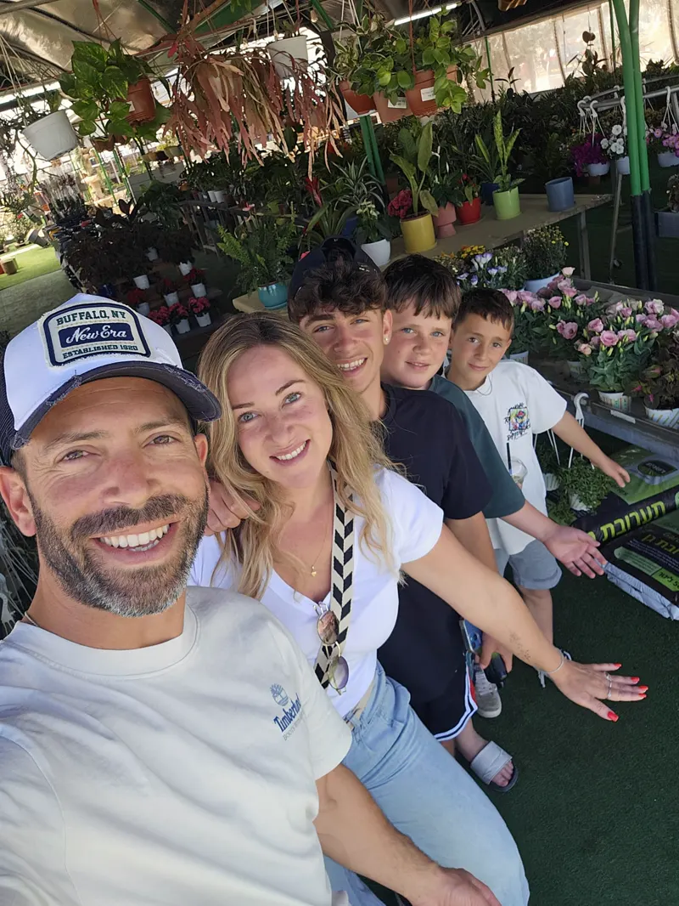
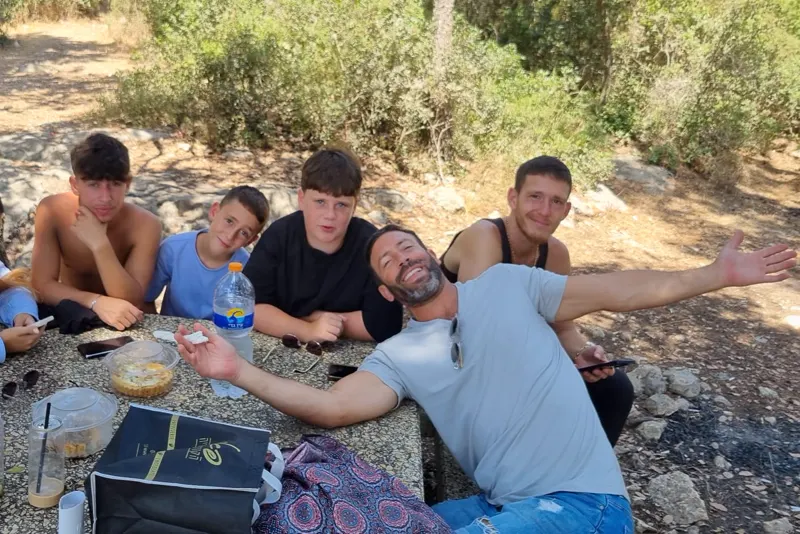
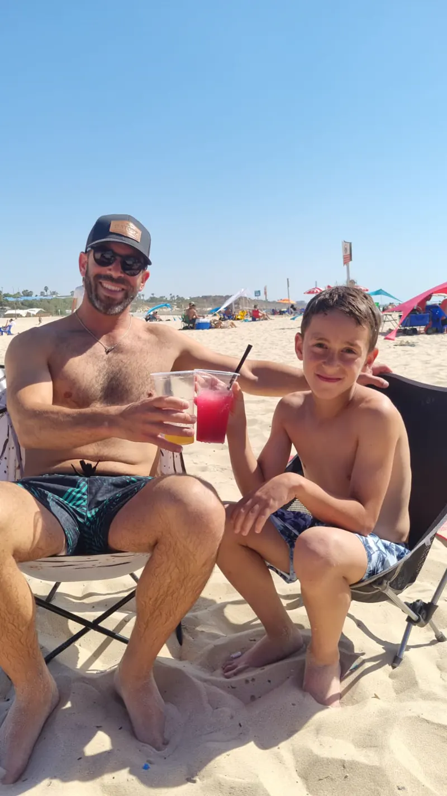
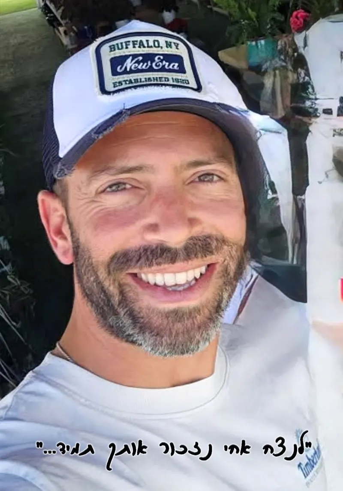
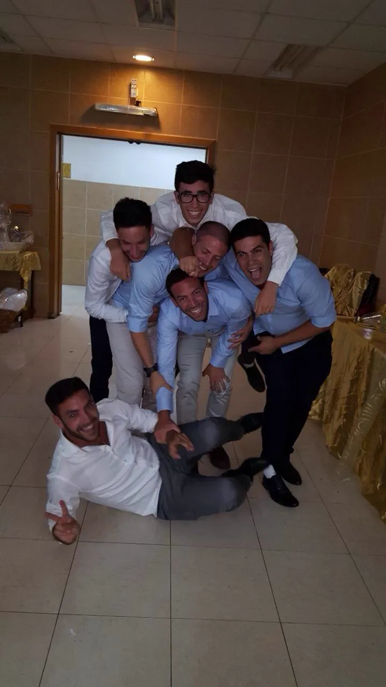
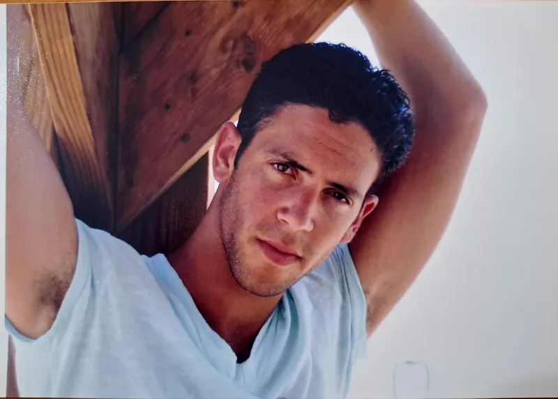
יש לכם תמונה של יוחנן שתרצו להוסיף? נשמח לקבל אותה במייל: hmakomeforyou@gmail.com
שותפות מקצועית
המרכז נשען על שותפות מקצועית לפיקוח קליני, הכשרת הצוות וליווי מתודולוגי, כדי שכל מעטפת רגשית תיעשה באחריות, בבטיחות ובאיכות.
פינת זיכרון
יוחנן השאיר רושם על כל מי שנגע בחייו. אם הכרת אותו, מהמסלול הצבאי, מהמשפחה, מהשכונה, כל זיכרון קטן הוא חלק מהמורשת שהמרכז נושא.
כתבו לנו, ונשמור את הדברים כחלק מארכיון הזיכרון שייבנה כאן, במרכז.
שתפו זיכרון במייל
כתבו לנו כמה מילים, מי אתם, מה הקשר ליוחנן, ומה תרצו שיישמר. כל זיכרון מתקבל בהערכה וביד עדינה.
לכתוב לנו זיכרוןפינת הזיכרון הדיגיטלית באתר תעלה בקרוב. בינתיים אפשר לקרוא עוד על יוחנן בדף שמוקדש לזכרו.
הדברים נשמרים בצורה מכובדת ולא מתפרסמים בלי אישורכם.
להצטרף
"המקום" עוד בהקמה. אנחנו מחפשים שותפים, אנשים, עסקים וקרנות, שרואים בחזון הזה גם את שלהם. כל תרומה, בין אם בזמן, בידע או בהשקעה כספית, מקדמת אותנו צעד נוסף.
מינוף משאבים וקולות קוראים מעולם הטיפול והשיקום, למימון ישיר של המעטפת.
קרנות וקהילות שמאמינות במורשת של יוחנן ובמשפחות שנושאות בנטל השקט.
הזדמנות לכל אחד לקחת חלק ישיר בהקמת המקום ולהנציח את זכרו של יוחנן.